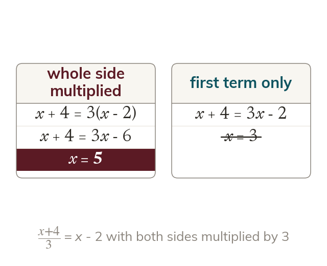

Multiply both whole sides
Clear a fraction by multiplying both whole sides by its denominator. A sum that is multiplied goes in a bracket first.
An equation stays balanced only when both whole sides are multiplied by the same number, so every term on both sides is multiplied by the denominator. A sum that is multiplied goes in a bracket first, so the multiplication reaches every term of it.